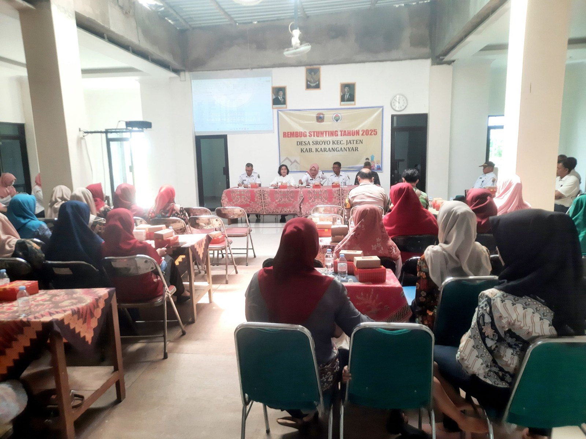

23-10-2026
WIB
Profil Kepala Desa dan Perangkat Desa Sroyo, Kecamatan Jaten, Kabupaten Karanganyar.
Kepala Desa
Karanganyar, 6 April 1967
Sarjana
Alamat: Karangasem RT 02 RW 03
Sekretaris Desa
Karanganyar, 4 Januari 1976
Sarjana
Alamat: Pulosari RT 04 RW 02
Kaur Tata Usaha dan Umum
Karanganyar, 8 November 1991
Sarjana
Alamat: Sroyo RT 003 RW 010
Kaur Keuangan
Karanganyar, 14 Juli 1975
Sarjana
Alamat: Sroyo RT 07 RW 09
Kaur Perencanaan
Karanganyar, 23 Juni 1986
SLTA
Alamat: Karangasem RT 02 RW 03
Kasi Pemerintahan
Karanganyar, 1 Juni 1986
SLTA
Alamat: Bantar RT 01 RW 06
Kasi Pelayanan
Karanganyar, 2 Desember 1990
Sarjana
Alamat: Sroyo RT 04 RW 09
Kasi Kesejahteraan
Karanganyar, 11 September 1960
SLTA
Alamat: Karangasem RT 03 RW 03
Kadus Kasak
Karanganyar, 19 Mei 1972
Sarjana
Alamat: Kasak RT 01 RW 01
Kadus Pulosari
Karanganyar, 8 Februari 1967
SLTA
Alamat: Pulosari RT 04 RW 02
Kadus Tundungan
Karanganyar, 5 September 1955
SLTP
Alamat: Tundungan RT 06 RW 04
Kadus Kanten
Karanganyar, 15 Februari 1972
SLTA
Alamat: Sepreh RT 03 RW 06
Kadus Ngledok
Karanganyar, 10 Februari 1964
SLTA
Alamat: Ngledok RT 02 RW 08
Kadus Sroyo
Karanganyar, 12 Januari 1966
SLTA
Alamat: Sroyo RT 07 RW 10

REMBUG STUNTING DESA SROYO, PEMERINTAH DESA TEGASKAN KOMITMEN CEGAH STUNTING10-09-2025